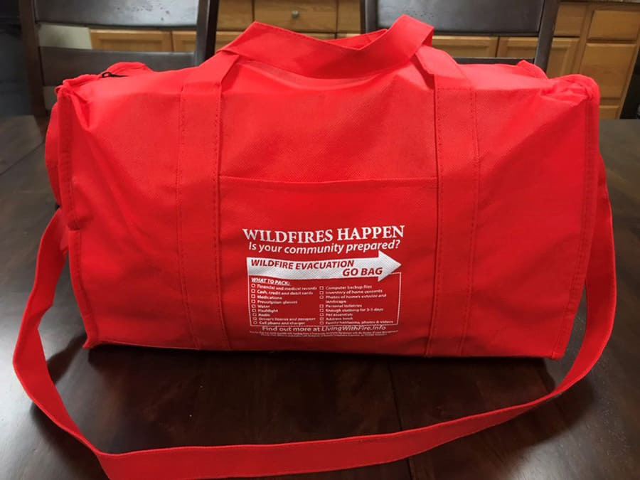

Do not wait for a wildfire to come. Act while you still can. Before a wildfire happens, make sure you pack a go-bag, know evacuation routes, keep important documents, check official alerts, and clear dry leaves or branches at home. Click the button below to see what to pack for your go-bag. Preparing before a wildfire can turn fear into action.
Open Go-Bag ChecklistSAFETY
Prepare Before
